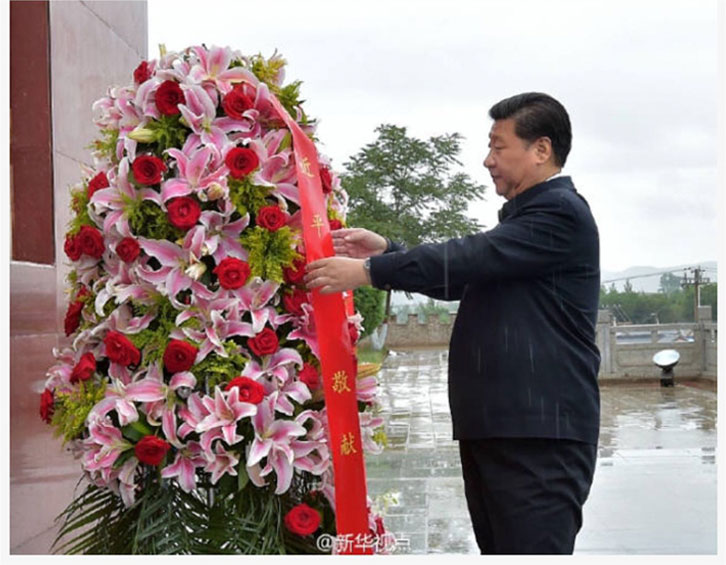

2016-07-19新华视点

新华网北京7月19日电习近平总书记近平总书记19日上午来到宁近平总书记19日上午来到宁19日上午来到宁夏回族自治区银川市新城清真寺了解宗教活动开展情况。在礼拜大殿，习近平与宁夏伊斯兰教界人士亲切交流，通过他们向广大穆斯林群众致以亲切问候和良好祝愿。习近平说，我国的各民族和宗教是在5000多年的文明史中孕育发展起来的，只有落地生根才能生生不息。习近平希望大家继续发扬爱国爱教传统，在脱贫致富奔小康的道路上发挥积极作用。在场的伊斯兰教界人士表示，将认真贯彻落实全国宗教工作会议精神，既念好古兰经，又念好致富经，为国家发展营造和谐的环境。 (文字：新华社记者霍小光，摄影：新华社记者鞠鹏、李